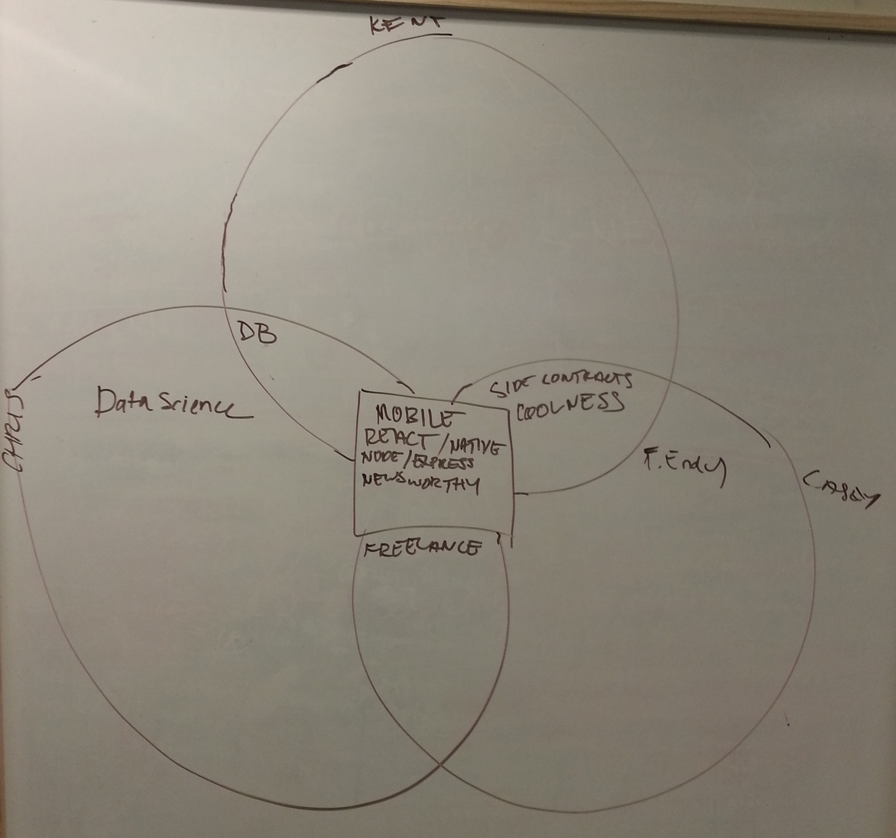

Try React Native
Our group of three sat down to discuss what we wanted to pursue for our Telegraph Academy senior project. We created a venn diagram and put up our different goals, technology interests, and interests. We discussed our goals for after the program and a few different proposals before settling in on a social app that uses React Native, d3, Firebase, the Facebook API.

Then we thought... can we pull this off in four weeks?
A few days later, the thought is certainly that we definitely can and that we will contribute to the work that will lead to making react native and firebase even more successful. Kent, one of my teammates, already has corrected a blog that we've used and we are going to keep adding to the blog posts and links that have helped us.
Some of the other links that we have used so far.
On choosing between angular ionic and react native.
https://www.airpair.com/angularjs/posts/angular-vs-react-the-tie-breaker
https://www.airpair.com/javascript/posts/switching-from-ios-to-ionic
https://news.ycombinator.com/item?id=9857580
React
http://red-badger.com/blog/2015/03/04/react-native-the-killer-feature-that-nobody-talks-about/
http://wix.github.io/react-templates/
https://scotch.io/tutorials/build-a-real-time-twitter-stream-with-node-and-react-js
http://coenraets.org/blog/2014/12/sample-mobile-application-with-react-and-cordova/
React Native
http://ryanclark.me/going-native-with-react/
https://facebook.github.io/react-native/docs/getting-started.html
http://www.jackcallister.com/2014/12/01/building-a-test-suite-in-react-js.html
http://www.raywenderlich.com/99473/introducing-react-native-building-apps-javascript
http://devdactic.com/react-native-for-beginners/
http://devdactic.com/react-native-tab-bar/
http://devdactic.com/react-native-resources/
https://facebook.github.io/react-native/docs/navigatorios.html
https://github.com/leecade/react-native-swiper
https://github.com/johanneslumpe/react-native-gesture-recognizers
https://github.com/enaqx/awesome-react#server-client-with-react
Xcode & Apple
https://developer.apple.com/programs/enroll/
https://developer.apple.com/library/ios/recipes/xcodehelp-imagecatalog-1.0/chapters/AddingLaunchImagestoanAssetCatalog.html
https://developer.apple.com/library/ios/documentation/UserExperience/Conceptual/MobileHIG/IconMatrix.html
https://developers.facebook.com/docs/facebook-login/ios
https://developer.apple.com/library/ios/documentation/UserExperience/Conceptual/MobileHIG/index.html#//apple_ref/doc/uid/TP40006556-CH66-SW1
https://github.com/brentvatne/react-native-svg
Firebase & Sockets
https://www.firebase.com/blog/2015-05-29-react-native.html
https://developer.apple.com/library/mac/documentation/NetworkingInternet/Conceptual/NetworkingTopics/Articles/UsingSocketsandSocketStreams.html
https://github.com/firebase/reactfire/tree/master/examples/todoApp
https://www.firebase.com/docs/rest/guide/saving-data.html
OAuth
https://medium.com/@jtremback/oauth-2-with-react-native-c3c7c64cbb6d
Here's us
http://katfish.me/
Long story made short: We found all this in less than 2 days. We've been able to parse through it, learn quickly and help others. Even as a new technology, it's clear that the framework achieves it's goal: it makes it easier to make applications and early adopters are excited about it and helping each other. Don't be discouraged to take on anything new!
This is a stub... there's more to come